Документация проекта Django: Система управления отелями
Оглавление
- Введение
- Структура проекта
- Функциональные возможности
- Модели
- Формы
- URL-адреса
- Представления
- Администрирование
- Заключение
Введение
Данный проект — это система управления отелями, позволяющая пользователям бронировать номера, оставлять отзывы, а администраторам — управлять заселением и выселением через административную панель.
Структура проекта
Основные файлы и директории проекта:
- models.py: Определение моделей базы данных для отелей, номеров, бронирований, отзывов и гостей.
- forms.py: Формы для регистрации и создания бронирований.
- views.py: Представления, реализующие основную логику работы с данными.
- urls.py: Настройка маршрутов приложения.
- admin.py: Настройки административной панели для управления данными.
- settings.py: Настройки для проекта Django.
- templates: Страницы html.
Функциональные возможности
Навигационная панель
Панель, на которой расположены все необходимые страницы для управления бронированием. Также есть две страниц предназначенные только для привилегированных пользователей (Админ-панель, Постояльцы за последний месяц), остальным пользователям он не видны.
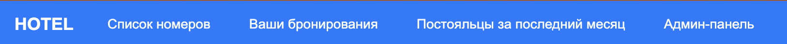
Домашняя страница
-
Возможность зарегистрироваться или войти в уже созданный аккаунт.
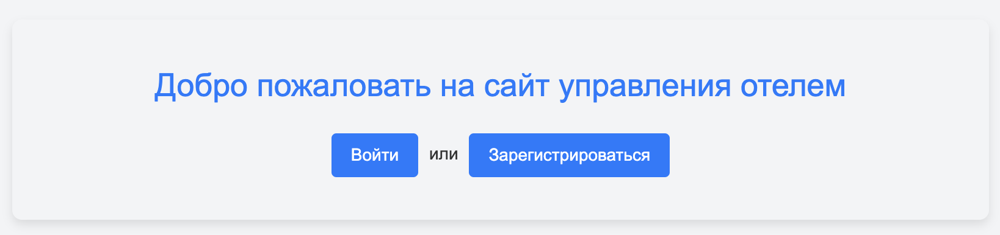
-
Возможность выйти из аккаунта
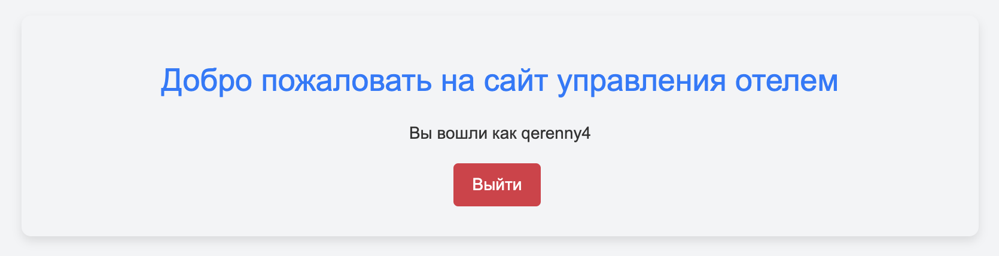
Регистрация пользователей
Возможность создания нового аккаунта. Все поля являются обязательными. Email был добавлен в базовую форму регистрации, как обязательный.
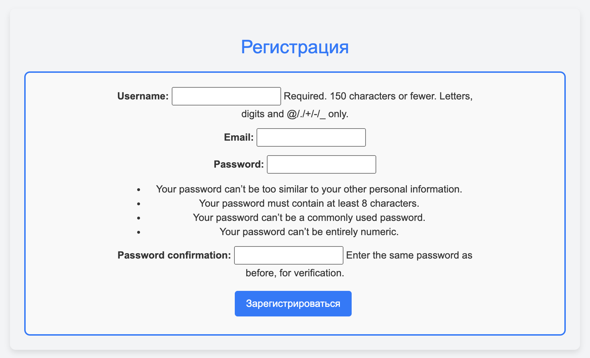
Вход в аккаунт
Возможность войти в аккаунт.
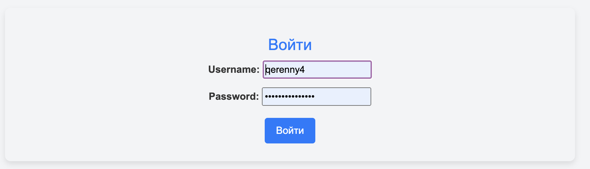
Просмотр списка номеров
Просмотр доступных номеров с пагинацией 2 объекта на страницу.
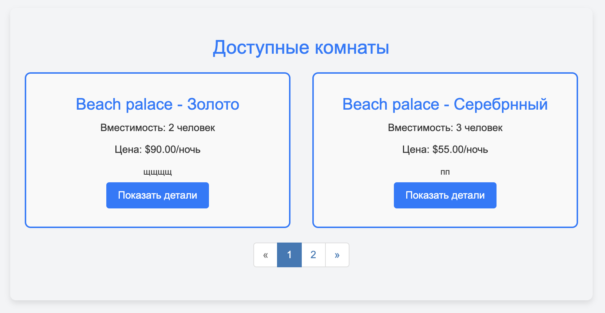
Детали номера Информация о номере, а также отзывы, оставленные пользователями, которые уже бронировали данный номер. И кнопка, которая позволяет забронировать номер авторизованным пользователям.
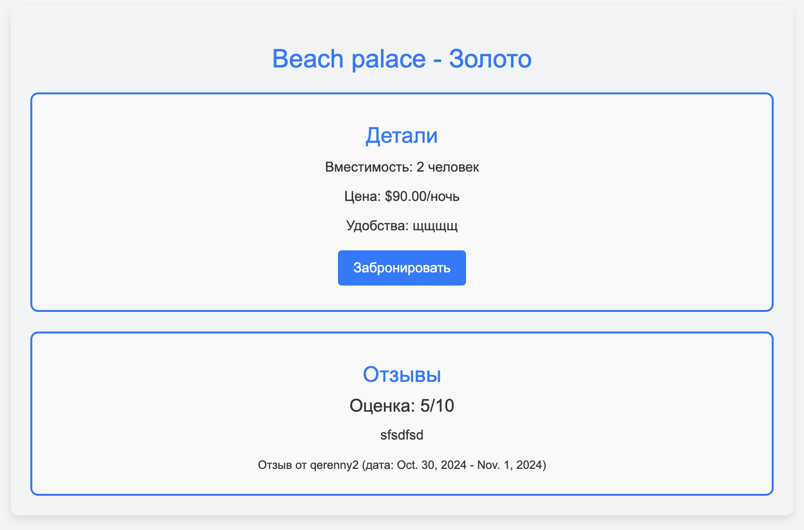
Бронирование номера
Форма с выбором дат. Если на данные даты уже номер занят, то высветится причина, и не даст забронировать.
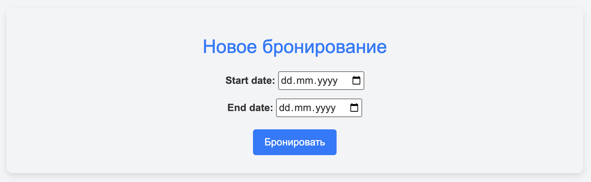
Список с бронированиями
Список, которые показывает забронированные пользователем номера, также есть возможность оставить отзыв (единожды), обновить даты бронирования, а также удалить бронирование. Если бронирование уже "сompleted", то пропадает возможность редактировать и удалять бронирование.
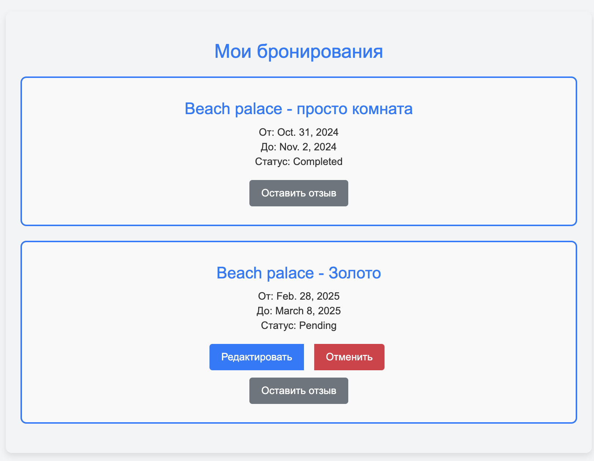
Редактирование бронированиями
Редактирование бронирования.
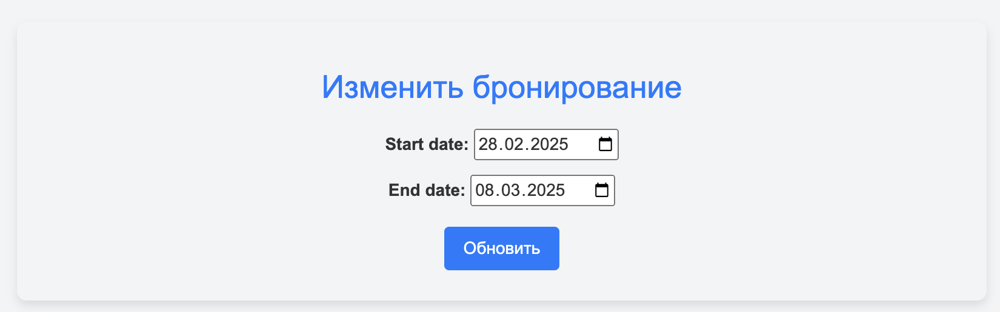
Удаление бронированиями
Удаление бронирования, пользователю выведется дополнительное окно с подтверждением действия.
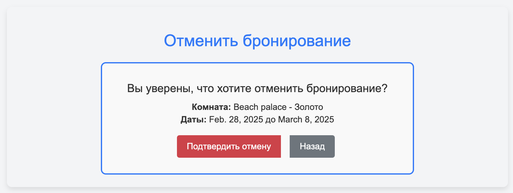
Оставление отзывов
Пользователи могут оставить отзыв о своих бронированиях c рейтингом от 1 до 10 и текстовым описанием.
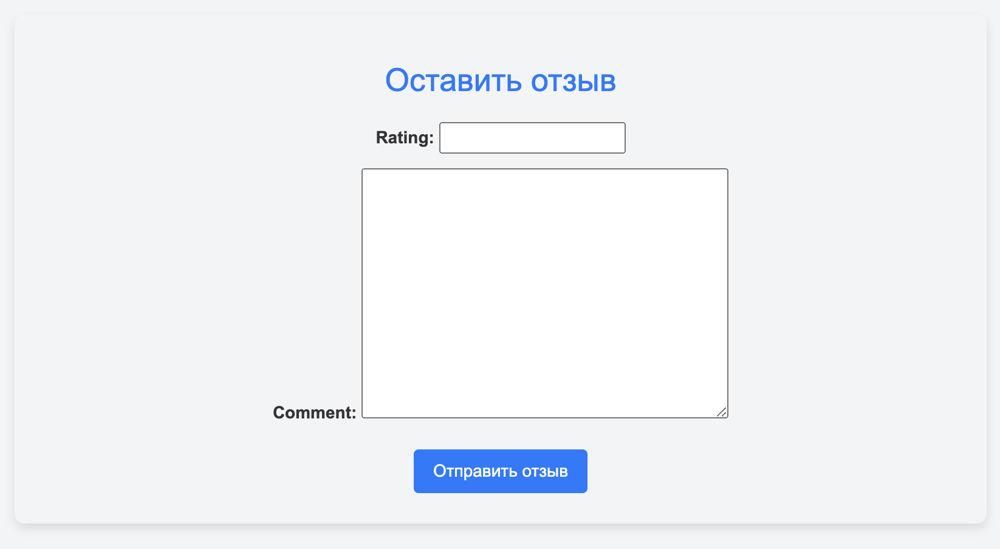
Просмотр постояльцев за последний месяц:
Таблица с информацией о гостях за последние 30 дней.
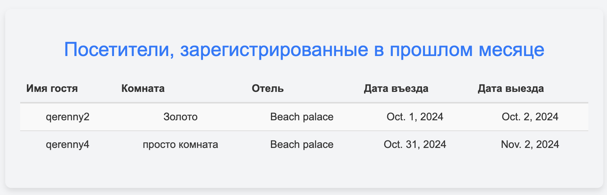
Административное управление
Широкие возможности управления процессами в отеле администратора.
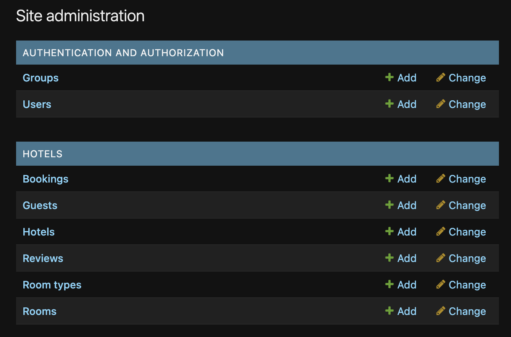
Управление статусом бронирования в админ-панели
Возможность выставить статус "заселяется" или "заселен" нескольким пользователям при помощи дополнительных действий.
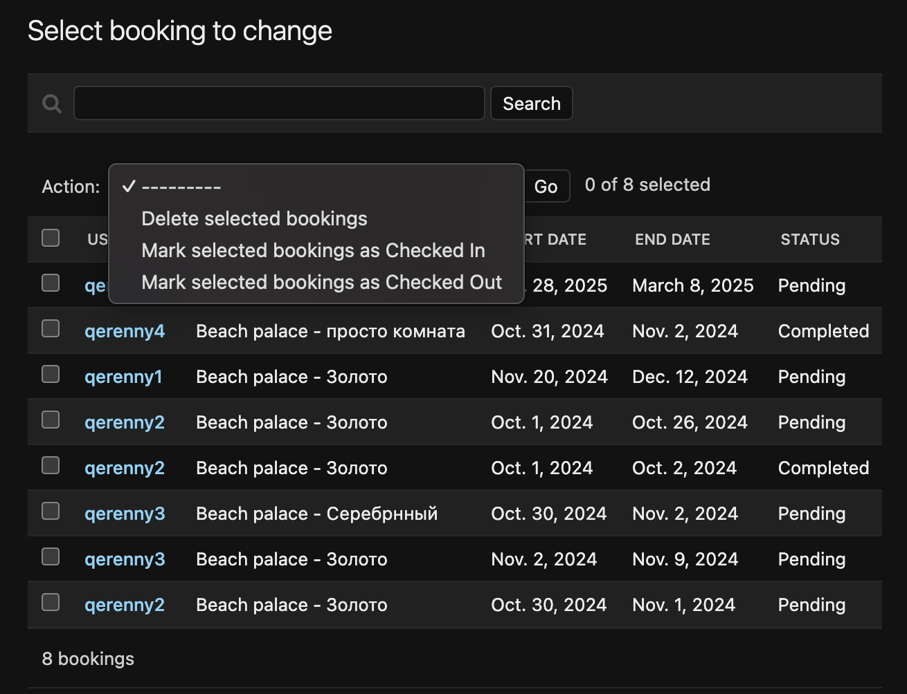
Модели
Функция проверки даты
Проверяет правильно ли пользователь ввел дату, и не сделал бронирование на уже прошедшие дни
# Проверка, что дата установлена на будущее
def validate_future_date(value):
if value < date.today():
raise ValidationError(
_('%(value)s is in the past! Please enter a future date.'),
params={'value': value},
)
Hotel
Модель для хранения информации об отелях, включающая название, владельца, адрес и описание.
# Модель отеля
class Hotel(models.Model):
name = models.CharField(max_length=255)
owner = models.ForeignKey(User, on_delete=models.CASCADE, related_name='hotels')
address = models.CharField(max_length=255)
description = models.TextField()
def __str__(self):
return self.name
RoomType
Модель для определения типов номеров с названиями и описаниями.
# Модель типа номера (например, "Люкс", "Эконом")
class RoomType(models.Model):
name = models.CharField(max_length=100)
description = models.TextField()
def __str__(self):
return self.name
Room
Модель номеров отеля. Включает:
- Ссылку на отель и тип номера.
- Стоимость за ночь и вместимость.
- Описание удобств.
# Модель номера
class Room(models.Model):
# Отель, к которому принадлежит номер
hotel = models.ForeignKey(Hotel, on_delete=models.CASCADE, related_name='rooms')
# Тип номера
room_type = models.ForeignKey(RoomType, on_delete=models.CASCADE)
cost_per_night = models.DecimalField(
max_digits=8,
decimal_places=2,
validators=[MinValueValidator(0.0)]
)
capacity = models.IntegerField(
validators=[MinValueValidator(1)]
)
amenities = models.TextField()
def __str__(self):
return f"{self.hotel.name} - {self.room_type.name}"
Booking
Модель бронирования номера. Включает:
- Пользователя, номер, даты начала и окончания бронирования.
- Статус бронирования, с вариантами (pending, confirmed, checked_in, checked_out, cancelled, completed).
# Модель бронирования
class Booking(models.Model):
# Возможные статусы бронирования
STATUS_CHOICES = [
('pending', 'Pending'),
('confirmed', 'Confirmed'),
('checked_in', 'Checked In'),
('checked_out', 'Checked Out'),
('cancelled', 'Cancelled'),
('completed', 'Completed'),
]
# Пользователь, совершивший бронирование
user = models.ForeignKey(User, on_delete=models.CASCADE, related_name='bookings')
# Номер, который бронируется
room = models.ForeignKey(Room, on_delete=models.CASCADE)
start_date = models.DateField()
end_date = models.DateField()
# Статус бронирования
status = models.CharField(
max_length=20,
choices=STATUS_CHOICES,
default='pending'
)
# Проверка, что дата окончания после даты начала
def clean(self):
if self.start_date and self.end_date:
if self.end_date < self.start_date:
raise ValidationError(_('Конечная дата должна быть позже начальной.'))
def save(self, *args, **kwargs):
self.clean()
super().save(*args, **kwargs)
def __str__(self):
return f"Booking by {self.user.username} in {self.room}"
Review
Модель отзывов к бронированию, включающая рейтинг (1-10), комментарий и период проживания.
# Модель отзыва о бронировании
class Review(models.Model):
# Бронирование, к которому относится отзыв
booking = models.ForeignKey(Booking, on_delete=models.CASCADE, related_name='reviews')
# Рейтинг отзыва
rating = models.IntegerField(
validators=[
MinValueValidator(1, message="Рейтинг должен быть минимум 1"),
MaxValueValidator(10, message="Рейтинг не должен превышать 10")
]
)
comment = models.TextField()
# Установка дат проживания из бронирования
def save(self, *args, **kwargs):
if self.booking:
self.start_date = self.booking.start_date
self.end_date = self.booking.end_date
super().save(*args, **kwargs)
def __str__(self):
return f"Отзыв {self.booking.user.username} для {self.booking.room}"
Guest
Модель для хранения данных о гостях, добавляющихся к бронированию.
class Guest(models.Model):
user = models.ForeignKey(User, on_delete=models.CASCADE, related_name='guest_bookings')
booking = models.ForeignKey(Booking, on_delete=models.CASCADE)
is_primary_guest = models.BooleanField(default=False)
special_requests = models.TextField(blank=True, null=True)
def __str__(self):
return f"{self.user.u
Формы
Файл forms.py содержит формы для регистрации пользователей и создания бронирований.
UserRegistrationForm: Используется для регистрации нового пользователя.
# Форма регистрации нового пользователя
class UserRegistrationForm(UserCreationForm):
email = forms.EmailField(required=True)
class Meta:
model = User
# Поля, которые будут отображаться в форме регистрации
fields = ('username', 'email', 'password1', 'password2')
# Переопределение метода save для сохранения email
def save(self, commit=True):
user = super().save(commit=False)
user.email = self.cleaned_data['email']
if commit:
user.save()
return user
BookingForm: Форма создания бронирования, включает поля для выбора номера, даты начала и окончания проживания, проверки на то, что дата окончания после начала, и что бронирование создается на будущее.
# Форма для создания нового бронирования
class BookingForm(forms.ModelForm):
class Meta:
model = Booking
fields = ['start_date', 'end_date']
# Устанавливаем виджеты для отображения календаря в полях выбора даты
widgets = {
'start_date': forms.DateInput(attrs={'type': 'date'}),
'end_date': forms.DateInput(attrs={'type': 'date'}),
}
# Переопределение конструктора для дополнительного параметра room
def __init__(self, *args, **kwargs):
self.room = kwargs.pop('room', None)
super().__init__(*args, **kwargs)
# Проверка даты начала и окончания бронирования
def clean(self):
cleaned_data = super().clean() # Получаем "очищенные" данные из формы, которые уже прошли базовую проверку Django.
start_date = cleaned_data.get('start_date') # Извлекаем поле start_date из очищенных данных.
end_date = cleaned_data.get('end_date') # Извлекаем поле end_date из очищенных данных.
# Проверка на существующие бронирования для данной комнаты
if start_date and end_date and self.room:
# Проверяем, существуют ли пересекающиеся бронирования для выбранной комнаты
existing_bookings = Booking.objects.filter(
room=self.room,
start_date__lte=end_date,
end_date__gte=start_date
).exclude(pk=self.instance.pk if self.instance.pk else None)
if existing_bookings.exists():
raise forms.ValidationError('Комната уже забронирована на выбранные даты')
return cleaned_data
ReviewForm
# Форма для добавления отзыва на бронирование
class ReviewForm(forms.ModelForm):
class Meta:
model = Review
fields = ['rating', 'comment']
URL-адреса
Файл urls.py содержит маршруты.
Основные маршруты
- /: — главная страница приложения.
- /login/, /logout/: Вход и выход пользователя.
- /register/: Регистрация нового пользователя.
- /rooms/: Просмотр списка доступных номеров с деталями.
- /room/\
- /room/\
- /bookings/: Просмотр списка бронирований пользователя.
- /booking/\
- /booking/\
- /recent_guests/: Таблица с постояльцами отеля за последний месяц.
urlpatterns = [
# Главная страница
path('', views.home, name='home'),
# Вход пользователя
path('login/', LoginView.as_view(template_name='login.html'), name='login'),
# Выход пользователя
path('logout/', LogoutView.as_view(), name='logout'),
# Регистрация нового пользователя
path('register/', views.register, name='register'),
# Просмотр списка комнат
path('rooms/', views.room_list, name='room_list'),
# Просмотр деталей комнаты
path('room/<int:pk>/', views.room_detail, name='room_detail'),
# Создание бронирования комнаты
path('room/<int:room_pk>/book/', views.booking_create, name='booking_create'),
# Список бронирований пользователя
path('bookings/', views.booking_list, name='booking_list'),
# Редактирование бронирования
path('booking/<int:pk>/edit/', views.booking_update, name='booking_update'),
# Удаление бронирования
path('booking/<int:pk>/delete/', views.booking_delete, name='booking_delete'),
# Добавление отзыва к бронированию
path('booking/<int:booking_id>/add_review/', views.add_review, name='add_review'),
# Просмотр гостей за последний месяц
path('recent_guests/', views.recent_guests, name='recent_guests'),
]
Представления
Файл views.py — представления для обработки запросов.
Главная страница
На главной странице отображается форма для входа и регистрации, если пользователь уже зарегистрирован, то кнопка выход.
# Главная страница
def home(request):
return render(request, 'home.html')
Регистрация пользователя Используется стандартная форма регистрации, используемая в Django.
# Регистрация нового пользователя
def register(request):
if request.method == 'POST':
form = UserRegistrationForm(request.POST)
if form.is_valid():
user = form.save()
login(request, user)
messages.success(request, 'Вы успешно зарегистрировались!')
return redirect('room_list')
else:
form = UserRegistrationForm()
return render(request, 'register.html', {'form': form})
Список комнат
Отображения списком существующих комнат с описанием, также реализована пагинация для более удобного отображения номеров.
# Просмотр списка доступных номеров
def room_list(request):
search_query = request.GET.get('search', '') # Получаем поисковый запрос, если он есть
if search_query: # Если запрос есть, фильтруем номера по отелю или типу комнаты
rooms = Room.objects.filter(
hotel__name__icontains=search_query
) | Room.objects.filter(
room_type__name__icontains=search_query
)
else: # Если нет запроса, выбираем все номера
rooms = Room.objects.all()
paginator = Paginator(rooms, 2) # Количество объектов на страницу
page_number = request.GET.get('page') # Получаем номер страницы из GET-запроса
page_obj = paginator.get_page(page_number) # Получаем текущую страницу с объектами
return render(request, 'room_list.html', {'page_obj': page_obj, 'search_query': search_query})
Детали о номере
Более подробная информация о комнате
# Подробная информация о конкретном номере
def room_detail(request, pk):
room = get_object_or_404(Room, pk=pk)
reviews = Review.objects.filter(booking__room=room) # Отзывы, связанные с этим номером
return render(request, 'room_detail.html', {'room': room, 'reviews': reviews})
Бронирование комнаты
Бронирование конкретного номера для конкретного пользователя
# Создание бронирования для конкретного номера
@login_required
def booking_create(request, room_pk):
room = get_object_or_404(Room, pk=room_pk)
if request.method == 'POST':
form = BookingForm(request.POST, room=room)
if form.is_valid():
booking = form.save(commit=False)
booking.user = request.user
booking.room = room
booking.status = 'pending'
booking.save()
messages.success(request, 'Бронирование создано успешно!')
return redirect('booking_list')
else:
form = BookingForm()
return render(request, 'booking_form.html', {'form': form, 'room': room})
Список бронирований пользователя
Отображение списком всех бронирований пользователя
# Список бронирований текущего пользователя
@login_required
def booking_list(request):
bookings = Booking.objects.filter(user=request.user)
return render(request, 'booking_list.html', {'bookings': bookings})
Обновление бронирования
У пользователя есть возможность обновить даты бронирования номера
# Обновление информации о бронировании
@login_required
def booking_update(request, pk):
booking = get_object_or_404(Booking, pk=pk)
# Проверка, что пользователь является владельцем бронирования
if booking.user != request.user:
messages.error(request, 'Вы не можете редактировать это бронирование.')
return redirect('booking_list')
# Проверка, что бронь уже кончилась
if booking.status == 'completed':
messages.error(request, 'Вы уже не можете обновить это бронирование.')
return redirect('booking_list')
if request.method == 'POST':
form = BookingForm(request.POST, instance=booking)
if form.is_valid():
form.save()
messages.success(request, 'Бронирование обновлено успешно!')
return redirect('booking_list')
else:
form = BookingForm(instance=booking)
return render(request, 'booking_form.html', {'form': form, 'booking': booking})
Удаление бронирования
У пользователя есть возможность отменить бронирование
# Удаление бронирования
@login_required
def booking_delete(request, pk):
booking = get_object_or_404(Booking, pk=pk)
if booking.user != request.user:
messages.error(request, 'Вы не можете удалить это бронирование.')
return redirect('booking_list')
if booking.status == 'completed':
messages.error(request, 'Вы уже не можете удалить это бронирование.')
return redirect('booking_list')
if request.method == 'POST':
booking.delete()
messages.success(request, 'Бронирование удалено успешно!')
return redirect('booking_list')
return render(request, 'booking_confirm_delete.html', {'booking': booking})
Добавление отзыва к бронированию
У пользователя есть возможность добавить отзыв к бронированию
# Добавление отзыва к бронированию
def add_review(request, booking_id):
booking = get_object_or_404(Booking, id=booking_id, user=request.user)
# Проверка, существует ли уже отзыв для этого бронирования
if Review.objects.filter(booking=booking).exists():
messages.error(request, 'Вы уже создали отзыв.')
return redirect('booking_list')
if request.method == 'POST':
form = ReviewForm(request.POST)
if form.is_valid():
review = form.save(commit=False)
review.booking = booking # Привязываем отзыв к бронированию
review.save()
messages.success(request, 'Отзыв оставлен успешно!')
return redirect('booking_list')
else:
form = ReviewForm()
return render(request, 'add_review.html', {'form': form, 'booking': booking})
Гости отелей за предыдущий месяц
У админа есть возможность посмотреть старые бронирования
# Просмотр последних гостей за месяц (доступен только суперпользователю)
@user_passes_test(lambda user: user.is_superuser)
def recent_guests(request):
last_month = timezone.now().date() - timedelta(days=30) # Вычисление даты месяц назад
guests = Booking.objects.filter(
status='completed',
start_date__gte=last_month
).select_related('user', 'room', 'room__hotel') # Выборка завершенных бронирований за последний месяц
return render(request, 'recent_guests.html', {'guests': guests})
Администрирование
Основные возможности административной панели:
- Управление отелями, комнатами и типами комнат.
- Управление бронированиями (заселение, выселение, изменение статусов).
- Просмотр и редактирование отзывов.
- Управление пользователями и гостями, прикрепленными к бронированиям.
# Админ-панель отеля
@admin.register(Hotel)
class HotelAdmin(admin.ModelAdmin):
list_display = ('name', 'owner', 'address')
search_fields = ('name', 'address')
list_filter = ('owner',)
# Админ-панель типа комнаты
@admin.register(RoomType)
class RoomTypeAdmin(admin.ModelAdmin):
list_display = ('name',)
search_fields = ('name',)
# Админ-панель номера отеля
@admin.register(Room)
class RoomAdmin(admin.ModelAdmin):
list_display = ('hotel', 'room_type', 'cost_per_night', 'capacity')
list_filter = ('hotel', 'room_type', 'capacity')
search_fields = ('hotel__name', 'room_type__name')
# Админ-панель бронирования
@admin.register(Booking)
class BookingAdmin(admin.ModelAdmin):
list_display = ('user', 'room', 'start_date', 'end_date', 'status')
list_filter = ('status', 'start_date', 'end_date')
search_fields = ('user__username', 'room__hotel__name')
actions = ['mark_as_checked_in', 'mark_as_checked_out']
def mark_as_checked_in(self, request, queryset):
updated = queryset.update(status='checked_in')
self.message_user(request, f"{updated} booking(s) marked as Checked In.")
def mark_as_checked_out(self, request, queryset):
updated = queryset.update(status='checked_out')
self.message_user(request, f"{updated} booking(s) marked as Checked Out.")
mark_as_checked_in.short_description = 'Mark selected bookings as Checked In'
mark_as_checked_out.short_description = 'Mark selected bookings as Checked Out'
# Админ-панель отзывов
@admin.register(Review)
class ReviewAdmin(admin.ModelAdmin):
list_display = ('booking', 'rating', 'get_start_date', 'get_end_date')
list_filter = ('rating',)
search_fields = ('booking__user__username', 'comment')
def get_start_date(self, obj):
return obj.booking.start_date
get_start_date.short_description = 'Start Date'
def get_end_date(self, obj):
return obj.booking.end_date
get_end_date.short_description = 'End Date'
# Админ-панель гостей
@admin.register(Guest)
class GuestAdmin(admin.ModelAdmin):
list_display = ('user', 'booking', 'is_primary_guest')
list_filter = ('is_primary_guest',)
search_fields = ('user__username',)
Заключение
Проект предоставляет широкие возможности для управления отелями, бронирования и отзывов.